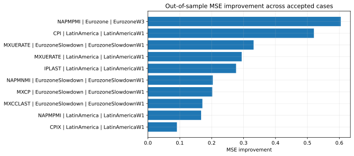
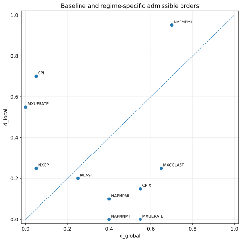

Empirical question
Given a known regime change at time TR, does the data-generating process of a macroeconomic series require a different long-memory parameter to achieve the same admissible level of stationarity and out-of-sample generalisation inside the regime as outside it?
If d* is invariant, persistence is structurally stable across the regime boundary. If d* differs, persistence is itself regime-dependent.
Regime design
Regime boundaries are not inferred from the series. They are specified a priori from documented economic events and institutional changes and treated as part of the data-generating process.
This separation avoids circularity between regime detection and regime confirmation. All series are used in point-in-time form: the baseline is strictly pre-window, there is no forward fill, and right-censored windows at the analysis horizon are explicitly flagged.
Released implementation
Stage 1
Map the raw series to the released level or log scale.
Stage 2
Apply fixed-width fractional differencing over the released admissible grid.
Stage 3
Select the smallest d that satisfies the released ADF rule on each sample.
Stage 4
Compare global and local transformed series using a causal split and an AR(2) out-of-sample check.
Stage 5
Require both predictive relevance and material separation in the memory parameter.
Stage 6
Return compact reliability warnings and explicit failure reasons.
Decision gate
A regime-local estimate d*local is judged superior to the global estimate d*global only when both conditions hold jointly.
- MSElocal ≤ (1 − η) · MSEglobal
- |Δd| ≥ τ
The released thresholds are η = 0.05 and τ = 0.05. This dual gate enforces predictive relevance and substantive separation in the memory parameter.
Confirmed segmented pairs
This public layer focuses only on the 10 pairs that satisfy the released admissibility and confirmation gate.
| Series | Break | Window | Ntrain | Ntest | dglobal | dlocal | Δd | MSE improvement | Reliability flag |
|---|---|---|---|---|---|---|---|---|---|
| NAPMPMI | Eurozone | EurozoneW3 | 8 | 6 | 0.7000 | 0.9500 | 0.2500 | 0.6047 | boundary |
| CPI | LatinAmerica | LatinAmericaW1 | 8 | 6 | 0.0500 | 0.7000 | 0.6500 | 0.5204 | none |
| MXUERATE | EurozoneSlowdown | EurozoneSlowdownW1 | 8 | 6 | 0.5500 | 0.0000 | -0.5500 | 0.3313 | boundary |
| MXUERATE | LatinAmerica | LatinAmericaW1 | 8 | 6 | 0.0000 | 0.5500 | 0.5500 | 0.2940 | boundary |
| IPLAST | LatinAmerica | LatinAmericaW1 | 8 | 6 | 0.2500 | 0.2000 | -0.0500 | 0.2764 | none |
| NAPMNMI | EurozoneSlowdown | EurozoneSlowdownW1 | 8 | 6 | 0.4000 | 0.0000 | -0.4000 | 0.2035 | boundary |
| MXCP | EurozoneSlowdown | EurozoneSlowdownW1 | 8 | 6 | 0.0500 | 0.2500 | 0.2000 | 0.2018 | none |
| MXCCLAST | EurozoneSlowdown | EurozoneSlowdownW1 | 8 | 6 | 0.6500 | 0.2500 | -0.4000 | 0.1708 | none |
| NAPMPMI | LatinAmerica | LatinAmericaW1 | 8 | 6 | 0.4000 | 0.1000 | -0.3000 | 0.1668 | none |
| CPIX | LatinAmerica | LatinAmericaW1 | 8 | 6 | 0.5500 | 0.1500 | -0.4000 | 0.0909 | none |
Case notes
- NAPMPMI / Eurozone / EurozoneW3: local admissible order rises from 0.70 to 0.95, with MSE improvement of 0.6047.
- CPI / LatinAmerica / LatinAmericaW1: local admissible order rises from 0.05 to 0.70, with MSE improvement of 0.5204.
- MXUERATE / EurozoneSlowdown / EurozoneSlowdownW1: local admissible order falls from 0.55 to 0.00, with MSE improvement of 0.3313.
- MXUERATE / LatinAmerica / LatinAmericaW1: local admissible order rises from 0.00 to 0.55, with MSE improvement of 0.2940.
- IPLAST / LatinAmerica / LatinAmericaW1: local admissible order falls slightly from 0.25 to 0.20, with MSE improvement of 0.2764.
- NAPMNMI / EurozoneSlowdown / EurozoneSlowdownW1: local admissible order falls from 0.40 to 0.00, with MSE improvement of 0.2035.
- MXCP / EurozoneSlowdown / EurozoneSlowdownW1: local admissible order rises from 0.05 to 0.25, with MSE improvement of 0.2018.
- MXCCLAST / EurozoneSlowdown / EurozoneSlowdownW1: local admissible order falls from 0.65 to 0.25, with MSE improvement of 0.1708.
- NAPMPMI / LatinAmerica / LatinAmericaW1: local admissible order falls from 0.40 to 0.10, with MSE improvement of 0.1668.
- CPIX / LatinAmerica / LatinAmericaW1: local admissible order falls from 0.55 to 0.15, with MSE improvement of 0.0909.
Summary figures
Out-of-sample MSE improvement across confirmed pairs

Released confirmation set only.
Global and local admissible orders

Sign and magnitude of Δd vary across confirmed cases.
Conclusion
The pipeline makes three contributions.
- Regime-conditional memory under exogenous breaks. Economic chronologies define exogenous windows. The pipeline tests whether these windows are associated with changes in long-memory behaviour that justify a regime-specific differencing order rather than a single global operator.
- Confirmation test for d-invariance. ADF defines the feasible region for d. Out-of-sample generalisation error under a common AR(2) scoring rule is the validation functional. The choice between global and local fractional differencing is therefore empirical and falsifiable.
- Structured diagnostic output. Regime-level tables and compact reliability flags show where a local differencing order is beneficial, where it is fragile, and where the global operator remains adequate.
For a non-trivial subset of macroeconomic series and regimes, regime-specific fractional differencing yields lower out-of-sample error than a global differencing order under the same stationarity constraint. For the remainder, the global operator is sufficient. The result is conditional, not universal.
Reliability
boundary
At least one estimated differencing order lies at the edge of the released admissible grid.
sample_bind
The effective train or test support is at the released minimum floor.
stability
The implied persistence shift is large enough to warrant caution.
Publication boundary
- Public: methodological core, released decision logic, confirmed segmented pairs, and compact reliability flags.
- Omitted: proprietary data, private paths, internal notebook chains, private robustness infrastructure, and private registries.
- Interpretation limit: confirmed cases do not establish predictive generality across all macroeconomic release series.
Reproducibility
The public repository is reproducible at the level of methodological logic when applied to externally provided arrays.
import numpy as np
import src.core_pipeline as cp
before = np.array([...], dtype=float)
during = np.array([...], dtype=float)
result = cp.validate_regime(
series_name="YOUR_SERIES",
before_values=before,
during_values=during,
pair_id="YOUR_SERIES|Window"
)
print(result)